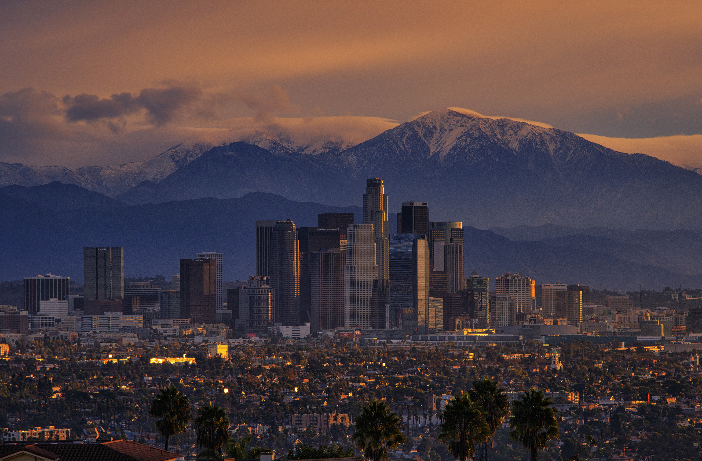

Los Angeles has a human-made problem where primary pollutants combine with sunlight to create ozone... leading to photolight smog
Environmental
Los Angels is surrounded by a mountain range, which contributes to a thermal inversion layer where pollutants
are trapped at ground level
Cultural

The photochemical smog has been synonymous with L.A. since it's arrival in the summer of 1943. Citizens of
the city are used to the smog as part of their lives.
Economical
With old vehicles being a main source that leads to ozone and the smog, the city has invested part of their
budget in newer
vehicles that release less pollutants in order to combat the severity of the smog
Ecological
Nitrogen oxides, PAN, and ozone limits amount of photosynthesis plants can perform, reducing or even stopping
their growth